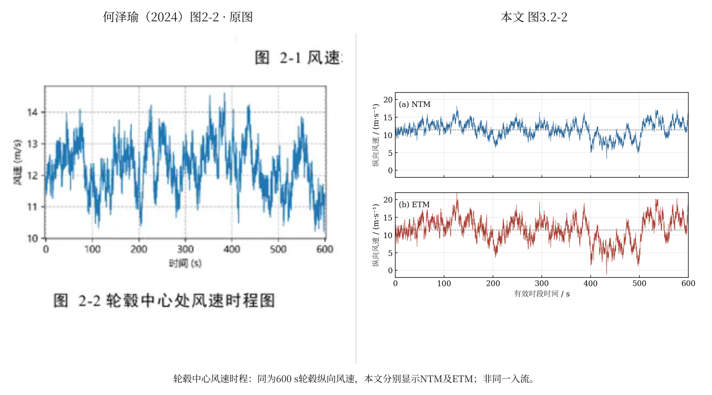
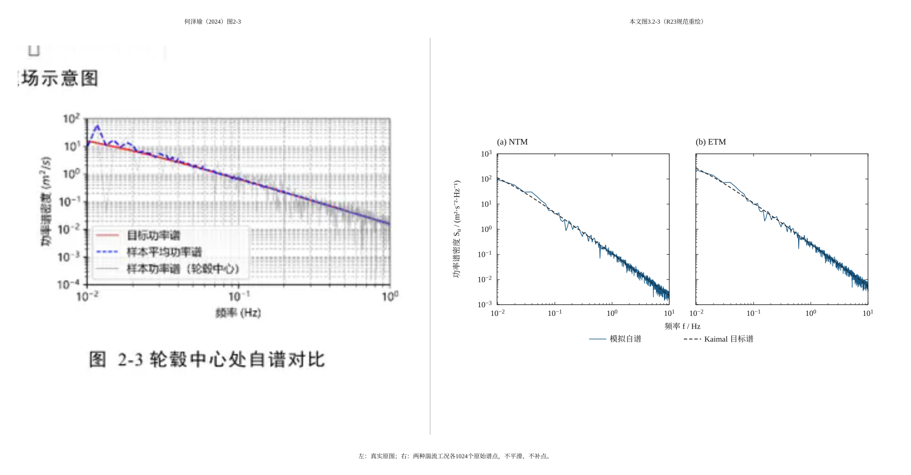

风荷载图件 论文第三章
随机风场与叶素动量理论图件对照
塔身风阻及转子推力系数原图对照
何泽瑜（2024）印刷第9页（PDF第20页）图2-1～2-3与本文图3.2-1～3.2-3。左侧为已归档原页截图的实际裁剪，右侧为工作室现有图件原PNG。历史整页对照原件；原论文PDF第20页。
轮毂中心风速时程：何图2-2与本文图3.2-2

均为600 s风速时程，本文为11.4 m/s的NTM、ETM单种子；不同风速与种子不能比较逐点误差。 下载拼图轮毂中心自谱：何图2-3与本文图3.2-3

何图含样本平均谱与中心点谱，本文仅为两个单种子中心点Welch谱与目标谱；不等同于多种子统计验证。 下载拼图原始数据及绘图程序：正式风场图件；来源记录。原文截图分辨率有限，未重新描画。图件对应不构成物理模型验证。